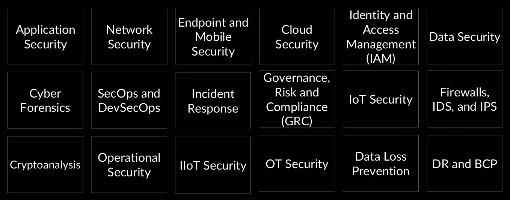
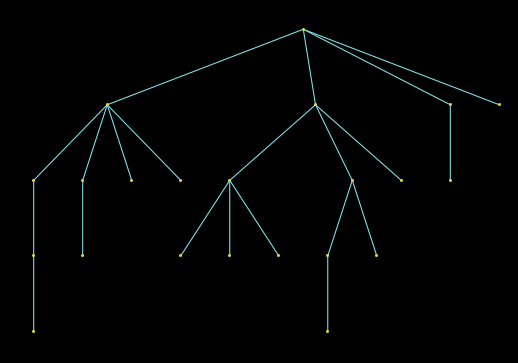

San, Praneel • 09-04-2025 • <3 CyberSec
What to Expect:
- What do Cyber-Security professional actually do?
- Importance of Linux in Cyber-Security.
- What is “the chain of topics” or “the art exploring”?
- Platforms to learn and explore from.
- Black box learning.
- Cyber tools
- Demonstration of Strom-Breaker and picoducky || USB dead-drop
- Industry accepted certificates in Cyber-Security
- Project Mania
What do Cyber-Security professionals actually do
The industry jobs:

The above mentioned are Ethically encouraged jobs for Cyber-Security professionals
Linux in Cyber-Security
Open-Source
Stable and Patch management
Chain of topics or Art of Exploring

Websites to learn from
Pico Ducky
Convert RPi Pico to Pico Ducky from here.
Industry accepted certificates in Cyber-Security
Project Mania
Torrent Client
How it works
Credits: Mukti Core
Edit this page